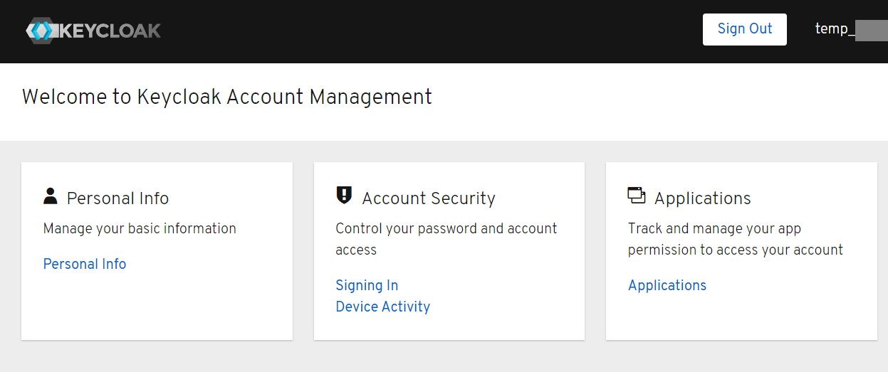

セットアップ方法は別記事に記載する。以下はEC2のステータスを記載する
| 項目 | ステータス |
|---|---|
| OS | Amazon Linux2(64bit) |
| インスタンスタイプ | t2.micro |
| keycloakバージョン | 12.0.2 |
Linuxのデフォルトのディレクトリ構成は次の通り。
rootディレクトリ(/)
- bin
- boot
- dev
- etc
- home
- lib
- lib64
- local
- media
- mnt
- opt
- proc
- root
- run
- sbin
- srv
- sys
- tmp
- usr
- var
1. zipファイルのダウンロード
wget https://github.com/keycloak/keycloak/releases/download/12.0.2/keycloak-12.0.2.zipやcurlでzipをダウンロードし、optフォルダに保存する。
2. zipの解凍
unzip keycloak-12.0.2.zip
3. JDKのインストール
yum -y install java-1.8.0-openjdk-devel
4. Maven用ディレクトリ作成
mkdir /opt/maven
コマンドでoptフォルダ直下にmavenフォルダを作成する
5. Mavenのダウンロード
curl https://archive.apache.org/dist/maven/maven-3/3.6.1/binaries/apache-maven-3.6.1-bin.tar.gz
6. Mavenの解凍
tar zxv apache-maven-3.6.1-bin.tar.gzで先のmavenフォルダに展開する
7. Mavenのパス設定
パスが通らなかったら.bash_profileファイルを編集して、PATH=$PATH./apache-maven-3.5.0/binにしてもいい。
N. ユーザ画面でここまで開けばセットアップ完了

以上